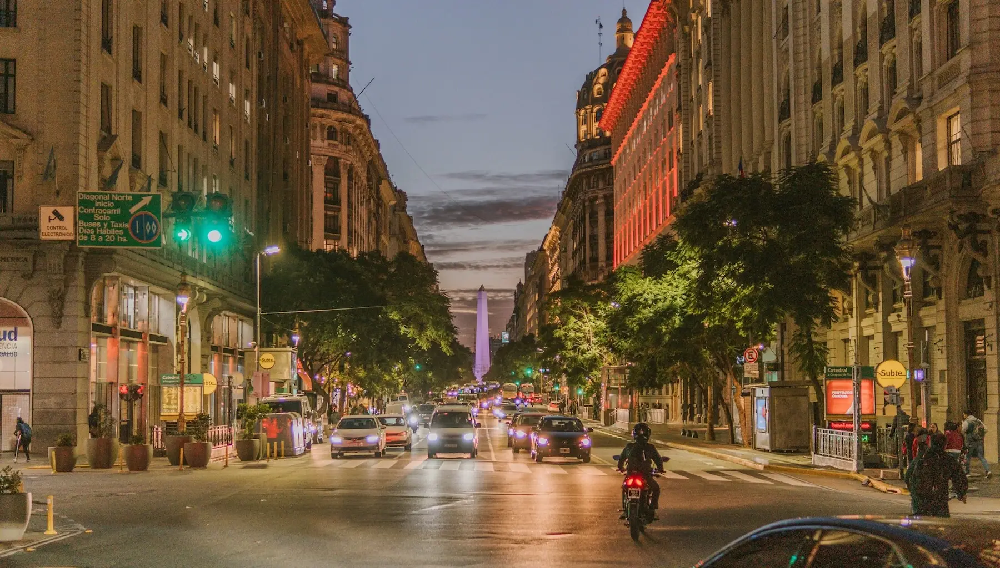

Descripción
Buenos Aires, capital de Argentina, es una ciudad vibrante y multicultural conocida por su arquitectura, cultura, gastronomía y energía. Es el centro económico, político y artístico del país, destacando por sus cafés, la pizza porteña, el Obelisco y la amplia Avenida 9 de Julio. Su dinamismo se vive en cada rincón, ofreciendo oportunidades para trabajar, crecer y conectar con una identidad única. La ciudad combina tradición y modernidad, convirtiéndose en un símbolo de la vida urbana latinoamericana.

Datos Curiosos
- Ciudad de libros: Es la ciudad con más librerías per cápita del mundo (25 por cada 100.000 habitantes).
- Subte histórico: La Línea A, inaugurada en 1913, fue la primera red de subterráneos de Latinoamérica.
- Récord en fútbol: Es la ciudad con mayor concentración de estadios de fútbol del mundo.
- Psicólogos por habitante: Un estudio de 2012 señaló que Buenos Aires tiene la mayor cantidad de psicólogos por habitante a nivel mundial.